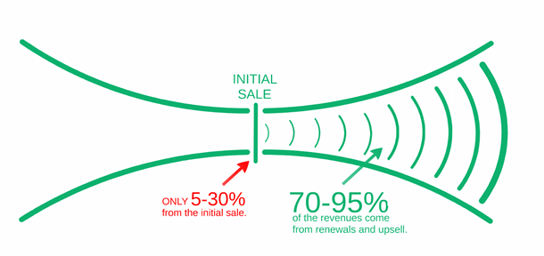

Another 3 tips on how to optimize your SaaS sales funnel

#4 Identify any sales bottleneck
Optimising a SaaS sales funnel for efficiency starts by looking at your funnel and asking: where does it get narrow really fast? Visualise it by looking at your different data points at each identified stage.
In an ideal world, your funnel would be parallel i.e. all your leads would convert to customers. But we all know that’s not the case. Aiming for a funnel where numbers keep at a consistent rate throughout is good enough.
Naturally, you’ll experience the sharpest drop near the beginning where your leads are being qualified.
A funnel that shows a sharp drop somewhere after lead qualification most likely has a bottle neck. These occur when your processes make it difficult for leads to move on to the next stage of the funnel.
It may be caused by poor qualification at the beginning or it may be that your prospects don’t fully understand what they are expected to do because the value of taking the next step isn’t apparent to them.
When that happens, take a step back and play the devils advocate by identifying all and any objections your customers may have along the funnel. It is more or less like pre-emptive objection handling: remove as many sources of friction as you can foresee and you’ll be well equipped for the objections that need handling.
#5 Streamline your time to close
Salesforce’s Second Annual State of Sales Report stated that 64% of a sales reps time is spent on tasks which doesn’t actually involve selling.
Knowing that more than 50% of your sales reps time is being spent on not engaging your potential customers in a sale, is an alarming statistic. And can be a huge bottle neck to your overall sales funnel.
That is why rather than looking at your sales funnel in a stage-by-stage perspective, sometimes breaking down each stage and identifying areas of lack of productivity can prove helpful too.
Tracking KPIs like the average length of a sales cycle and the average Productivity Per Rep (PPR) will help you pinpoint sales performance issues or process inefficiencies.
When your sales reps aren’t selling, the same report identified that a quarter of the tasks were spent on administrative work such as drafting, editing and chasing contracts.
Therefore, taking advantage of sales tools with workflow automation, electronic document management, and e-signatures can help reduce the administrative burden of each sales rep.
#6 Don’t forget what happens after the close
In the SaaS world, upgrades and renewals make up about 70-95% of the overall revenue. Your team needs to take a long term view when selling because your customers will prove their maximum value only after their initial purchase.
Therefore, your main focus should be on retaining your users and upgrading them. The diagram below explains this.
With the majority of your income coming in after initial purchase, when it comes to SaaS, retention needs to be viewed as part of the funnel too, and it needs to be optimised along with the rest of the funnel in a coherent way.
The concept of bottle necks that we explained in point 4 applies all along the funnel. That means it applies after purchase too. Optimising funnels for post-purchase success means bringing customer success into sales, much like you bringing marketing into sales at the top of the funnel.
When optimising the post-purchase funnel for bottle necks, you’ll need to keep an eye out for sudden drop-offs at transition points, the same as you did in the pre-purchase funnel.
Oleks Tsukur
Oleks Tsukur helps SaaS businesses grow revenue by custom conversion funnel.